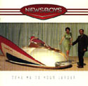
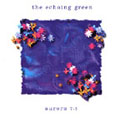
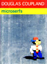

![[ Break hard the wishbone... ]](pics/mental/masen.jpg)
| Sarah Masen... A hot new artist on the Christian music scene, Sarah Masen's got a powerful voice and insightful writing. She was the breakout indie artist of Cornerstone '95, and her performance there led to a contract with Charlie Peacock's re:think label. Her new self-titled CD is also an AV CD, with videos and macromedia director toys and other such goodies. Great stuff! |
|

|
Executive Orders... What happens when your average field spook makes it to a presidential advisory position, is asked to step in for a few months as a figurehead VP -- then becomes the only living member of the executive branch after a terrorist attack? Well, you've got a book that's not too likely to become a movie... But seriously. Executive Orders is a massive work -- 850 pages -- with meticulous research and a deliciously huge number of sub-threads that weave together into a tale of international wrangling and biological warfare. Two rousing kumquat-thumbs up. |
| Paradigm Shift... It's the ultimate in trip-hop dance techno (whatever ya wanna call it but it comes from kraftwerks right cathy?). A couple 'a Texas college students originally released this indie collection on tape, and it was a smash hit. Scott Blackwell, of N*Soul, noticed the success and snatched 'em up. As some oft say, the bass is "phat." The kumquat, of course, would never use such an obviously passe phrase such as "phat" to describe the audio extacy of Paradigm Shift. |
![[ you should see his goatee. ]](pics/mental/schaeffer.jpg)
|
How Should We Then Live... Subtitled "The Rise and Decline of Western Thought and Culture," this landmark book by the late Francis Schaeffer traces the development of "Western Civilization." An insightful look at the great cultures that rose, and fell, and what we can learn from their successes and failures. An interesting sub-topic in the book is the devlopment of art and what it reveals about the societies that create it. |
| Take Me To Your Leader... Under the guidance of legend Steve Taylor, the Newsboys have grown from a drifting, directionless band to a tight group that's putting out some of the Christian world's best poprock. (No, kids, MWS is not alternative.) The fact that the radio single, Breakfast, has been horrendously overplayed doesn't negate the fact that this is one of the best efforts the band has put together to date. Tight, insightful, sometimes irreverent lyrics, and creative instrumentals with lots of hooks. |  |
| Essential System Administration... Woohoo! What library would be complete without this baby? Seriously, though, O'Rieley & Associates have create a mahhhvelous reference that covers the inner workings of UNIX with a smooth, flowing style and plenty of interesting real-life examples to illustrate thorny technical issues. Great for casual bedtime reading, or to pass the time on a warm summer's day. |
| The Echoing Green... It *is* the synthpop experience. |  |
|  | Microserfs... Douglas Coupland, the author of Generation X, Shampoo Planet, and Life After God, has proven his ability to capture the heart-essence of a subculture, a generation, in the written word. In Microserfs, he turns his eye to the "geek" subculture. If you work in the world of tech, or know someone who does, read this book; tis a frightening, amazing piece of work for its lifelike accuracy. *grin* |
![[ back to the home page of fun ]](pics/Titles/back.gif)